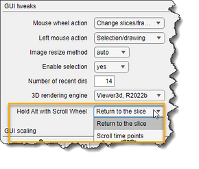

Did you know...
-
Usage:
- Hold Alt and scroll through slices
- Release Alt to return to the original slice
You can select between these modes in
Menu → File → Preferences → User Interface → Hold Alt with Scroll Wheel
|  |
Holding the Alt key enables different operations. By default, Alt allows you to return to the slice where scrolling began.
You can select between these modes in Menu → File → Preferences → User Interface → Hold Alt with Scroll Wheel |